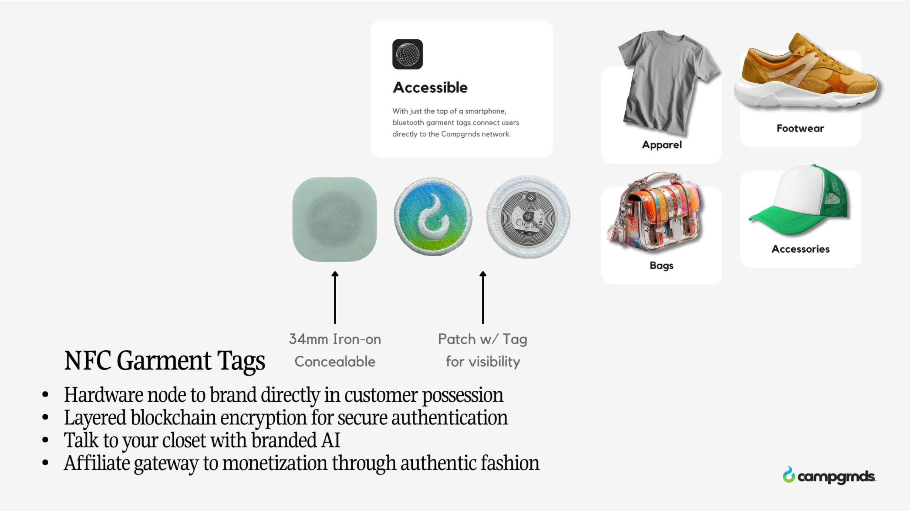

NFC
Woven-in, wash-proof, invisible.
A fingernail-sized chip sewn into a cuff, hem, or label. It needed no battery, survived the wash, and any modern phone could read it with a tap. That tap could open an authenticity check, a lookbook, an event unlock, or an exclusive drop.

Four steps
Embed
We chose the chip and its placement so it disappeared into the garment.
Encode
Each tag was written with its experience: authenticity, content, unlockables, or a passport.
Tap
Customers tapped with any modern phone. No app, no QR sticker.
Measure
Every tap reported the piece, the city, and the moment.
Made to be felt,
built to be measured.

What it did
for the house
Physical-digital campaigns
Runway pieces could unlock films, gate drops, and carry the designer's story.
Zero friction
No app installs and no QR stickers on the hem.
Hardware that lasts
Battery-free chips rated for the life of the garment.
Tap analytics
Engagement by garment, location, and time.
The Mink Building,
Harlem, 2024
During New York Fashion Week 2024, NFC-enabled pieces by Noah Joseph's ART IN HEAVEN walked the runway at The Mink Building on 126th & Amsterdam in Harlem. Noah is based at the SoHarlem incubator.
We placed 34 mm iron-on NXP 424 DNA chips into the collection. Each tap opened the brand's site and a conversational agent that told the designer's story. No app was required, and the design of the clothing stayed exactly as Noah intended.

Tag your
line
I'll help you pick chips, plan placement, line up vendors, and decide what the tap should open, based on what held up on the runway.
Book a session · $93/hr